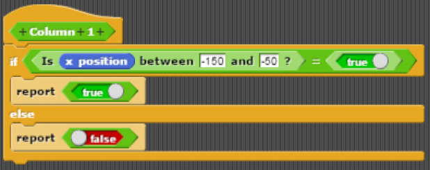

In diesem Abschnitt der Dokumentation geht es darum, wie es dazu kommt, dass die Speilfeldmarkierungen von Sprite2 und Sprite3, den „Spielern“, in jeder Zelle und Farbe zentriert sind und eine vordefinierte Form annehmen, um eine Übersichtlichkeit des Spielfeldes zu gewährleisten.
Wichtig dabei ist vor allem der Reporter „Which Tile?“, der die aktuelle Position des Sprites auf dem Spielfeld prüfen kann, um Informationen über die genaue Zelle, in der der Sprite sich befindet, herauszugeben. Bevor wir mit dem Bau dieses individuellen Blockes beginnen konnten, mussten wir zunächst die Anzahl der Felder, die Breite der Spalten und Zeilen und den Mittelpunkt des Spielfeldes bestimmen, damit kein Interpretationsspielraum bleibt. Da es sich um ein Tic-Tac-Toe Spiel handelt, entschieden wir uns für neun Felder, also drei Spalten und drei Zeilen. Aus Gründen der Einfachheit kürten wir die Koordinaten x: 0 und y: 0 zur Mitte des Spielfeldes, dementsprechend mussten die Zeilen eine Höhe und die Spalten eine Breite von je 100 haben, damit das gesamte Spielfeld auf dem Hintergrund Platz finden konnte. So konnten wir jeder der Spielfeldachsen, also der Linien, die die Ränder und Zwischenräume des Spielfeldes definieren, Koordinaten zuteilen. Bevor wir jedoch einen Block zusammensetzen konnten, der direkt die Nummer der Spielfeldzelle verrät, mussten wir zunächst Blöcke erstellen, die die Position des Sprites auf die X-Koordinaten jeder Spalte und auf die Y-Koordinaten jeder Zeile prüfen und darüber Auskunft geben, in Form einer booleschen Variable gibt.Hier sind alle Reporter aufgelistet, die prüfen, ob der Sprite in Reihe 1, 2, 3 oder in Spalte 1, 2, 3 liegt.
Beispiel Spalte: Damit die Bedingung, der Sprite befände sich in der ersten Spalte, der Wahrheit entspricht, muss dessen X-Koordinate einen Wert zwischen -150 und -50 annehmen. Eine Spalte ist nämlich 100 Schritte breit, das Zentrum des Spielfeldes befindet sich bei x: 0 und y: 0.

Beispiel Zeile: Damit die Bedingung, der Sprite befände sich in der ersten Zeile, der Wahrheit entspricht, muss dessen Y-Koordinate einen Wert zwischen 150 und 50 annehmen. Eine Zeile ist nämlich 100 Schritte hoch, das Zentrum des Spielfeldes befindet sich bei x: 0 und y: 0.

Im nächsten Schritt, der Erstellung des „Which Tile?“-Reporters, werden die Kriterien von Zeile und Spalte miteinander in Verbindung gebracht, um Aufschluss über die genaue Zelle zu erhalten, in der der Sprite sich aktuell befindet. Die Spielfeldzellen sind, in Leserichtung, von eins bis neun nummeriert, was das Erkennungssystem erheblich vereinfacht. Wenn also die Bedingungen für Zeile eins und Spalte eins beide wahr sind, befindet sich der Sprite in Zelle 1. Wenn die Bedingungen für Zeile eins und Spalte zwei wahr sind, befindet sich der Sprite in Zelle 2. Nach diesem Muster kann man jeder Zelle eine Spalte und eine Zeile zuordnen. So ist jede Position des Sprites in einer der neun Spielfeldzellen abhängig von der Nummer der Zeile und der Nummer der Spalte, also von seinen Koordinaten, deren Verständnis wir in mehreren Schritten erheblich erleichtert haben.
Auf diesem Bild ist der Inhalt des Reporters „Which Tile?“ zu erkennen.